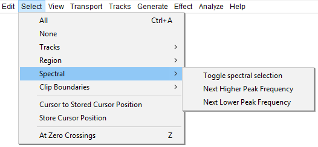

Select Menu: Spectral
From Audacity Development Manual
Spectral selection is used to make selections that include a frequency range as well as a time range on tracks in Spectrogram view. Spectral selection is used with special spectral edit effects to make changes to the frequency content of the selected audio. Among other purposes, spectral selection and editing can be used for cleaning up unwanted sound, enhancing certain resonances, changing the quality of a voice or removing mouth sounds from voice work.
- Click, or hover, on any menu item in the image to read about that command. Skip the image
- 
Toggle spectral selection Q
Changes between selecting a time range (and hence all the frequencies in that range) and selecting the last selected spectral selection in that time range. This command toggles the spectral selection even if not in Spectrogram view.
Next Higher Peak Frequency
When in Spectrogram view, snaps the center frequency to the next higher frequency peak, moving the spectral selection upwards. This does the same as clicking and dragging the center frequency upwards.
Next Lower Peak Frequency
When in Spectrogram views snaps the center frequency to the next lower frequency peak, moving the spectral selection downwards. This does the same as clicking and dragging the center frequency downwards.